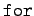

Maple stellt für den Aufbau eigener Prozeduren und Programme die üblichen Kontroll- und Schleifenstrukturen in spezifischer Form bereit.
Fallunterscheidungen werden mit dem -Befehl vorgenommen. Seine Grundstruktur ist
| (20.52) |
Der -Zweig kann fehlen.
Vor dem -Zweig können beliebig viele weitere Zweige mit der Struktur
| (20.53) |
eingefügt werden.
Schleifen erzeugt man mit  bzw. , die den Anweisungsteil in der Form verlangen.
In der -Schleife ist der Laufindex in der Form
In der -Schleife lautet der erste Teil
Um in sich abgeschlossene Programme zu gestalten, benutzt man in Maple die Prozeduranweisung. Sie kann sich über viele Zeilen erstrecken, entsprechend abgespeichert und unter ihrem Namen in die laufende Arbeit eingefügt werden. Ihre Grundstruktur lautet
| (20.54) |
Die Anzahl der Argumente der Prozedur muß nicht mit der im eigentlichen Körper benutzten Anzahl übereinstimmen; speziell kann die Angabe ganz fehlen. Alle mit definierten Variablen sind nur intern bekannt.
| Beispiel |
|
Es soll eine Prozedur geschrieben werden, die die Summe der Quadratwurzeln aus den ersten n natürlichen Zahlen bestimmt: Dann wird die Prozedur über ihren Namen mit dem gewünschten Argument n aufgerufen: |